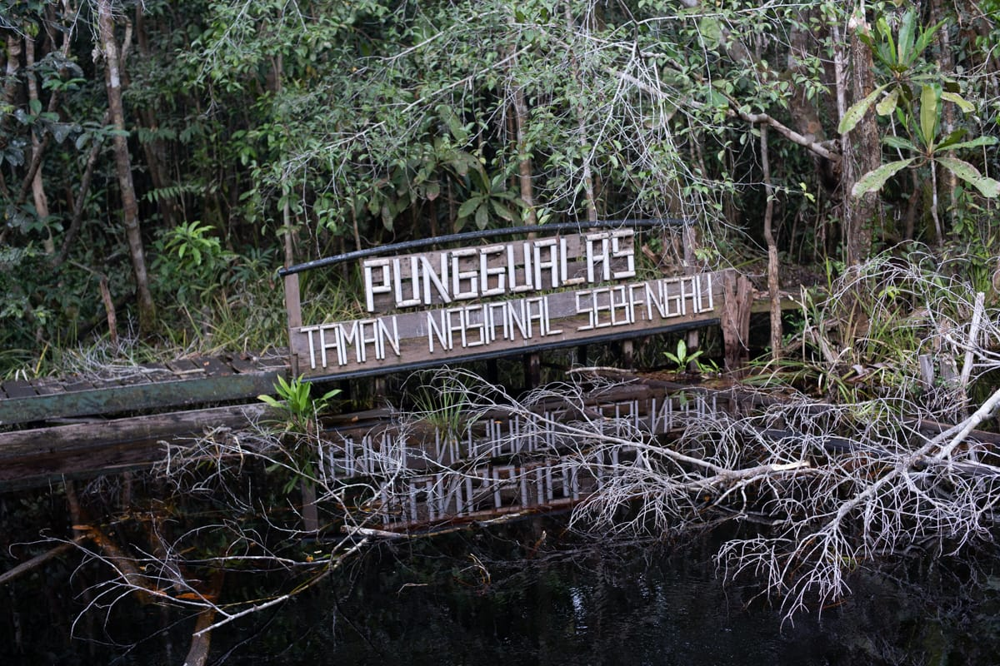
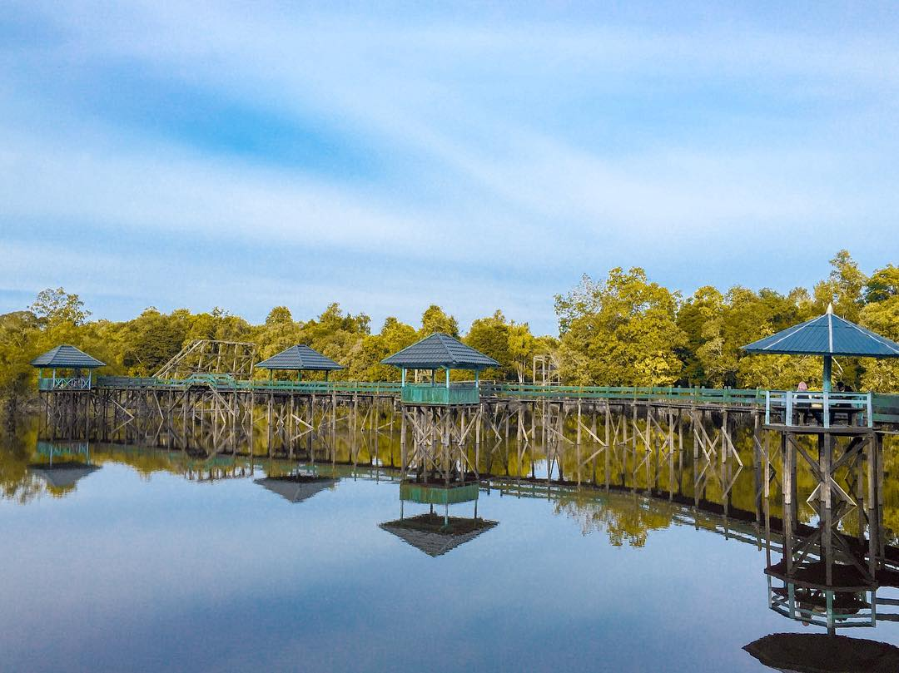
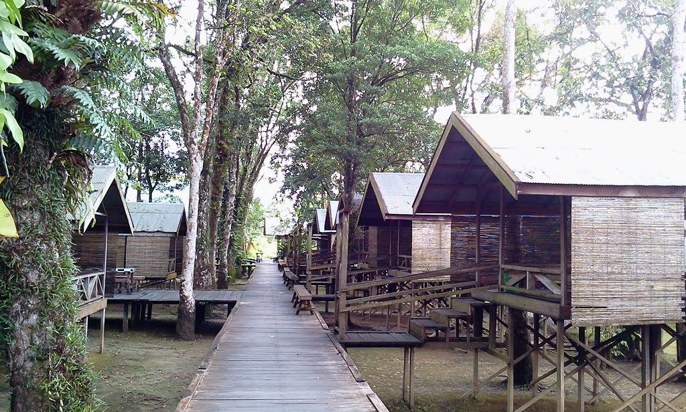
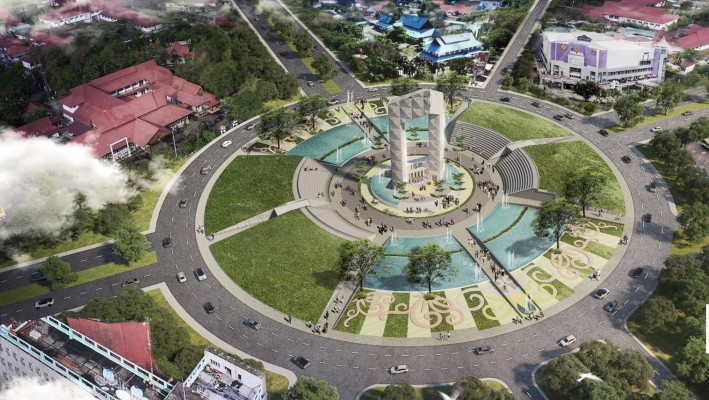
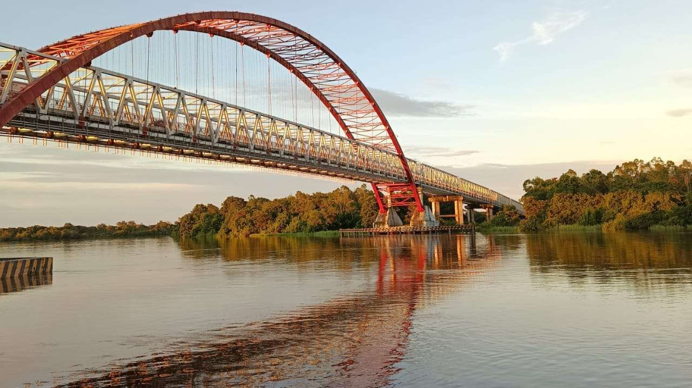

Jelajahi Alam, Budaya Dayak, dan Keindahan Kalimantan Tengah
Kota Palangkaraya merupakan ibu kota Provinsi Kalimantan Tengah yang dikenal sebagai salah satu kota dengan wilayah terluas di Indonesia. Kota ini memiliki peran penting sebagai pusat pemerintahan, pendidikan, dan perkembangan ekonomi di wilayah Kalimantan Tengah.
Palangkaraya juga memiliki kekayaan alam yang melimpah, terutama berupa hutan tropis dan kawasan rawa gambut yang unik. Salah satu kawasan terkenal adalah Taman Nasional Sebangau yang menjadi habitat berbagai flora dan fauna langka, termasuk orangutan.
Selain potensi alam, Palangkaraya juga memiliki daya tarik wisata seperti Danau Tahai dengan air berwarna kemerahan, serta ikon kota seperti Bundaran Besar dan Jembatan Kahayan.
Dengan kekayaan alam dan budaya yang dimiliki, Palangkaraya memiliki potensi besar untuk dikembangkan sebagai destinasi wisata unggulan di Indonesia.

Sebangau merupakan hutan rawa gambut tropis yang sangat luas dan unik, serta berperan penting sebagai penyimpan karbon dan pengatur keseimbangan air.

Danau Tahai yang terkenal karena airnya berwarna merah kecoklatan akibat kandungan gambut di sekitarnya. Danau ini juga menjadi wisata alam sekaligus tempat pelestarian lingkungan di Palangkaraya.

Wisata kum kum adalah tempat rekreaasi keluarga yang menggabungkan hiburan dan edukasi tentang hewan di Palangkaraya.

Bundaran Besar adalah landmark penting dan pusat keramaian di Palangkaraya yang memiliki nilai sejarah dan menjadi tempat berkumpul masyarakat.

Jembatan Kahayan terkenal dengan jembatan besar yang menghubungkan dua wilayah di Palangkaraya.